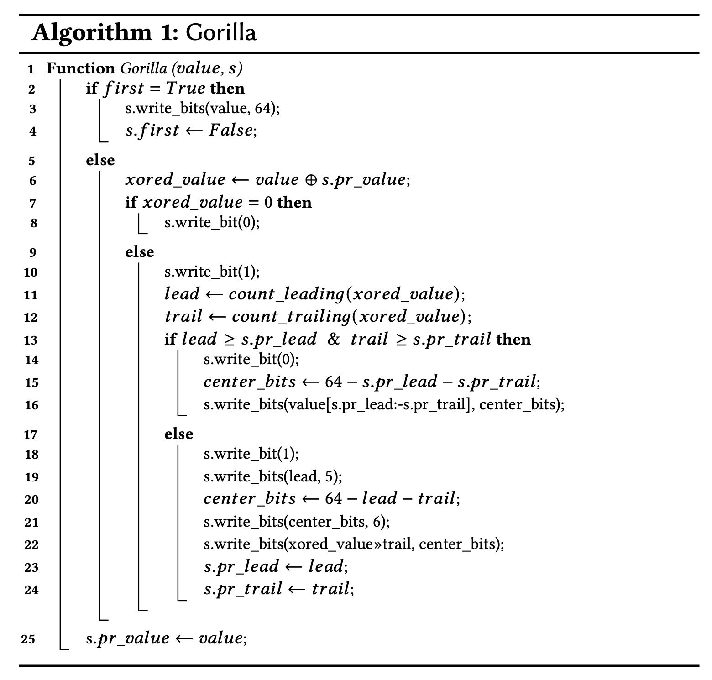
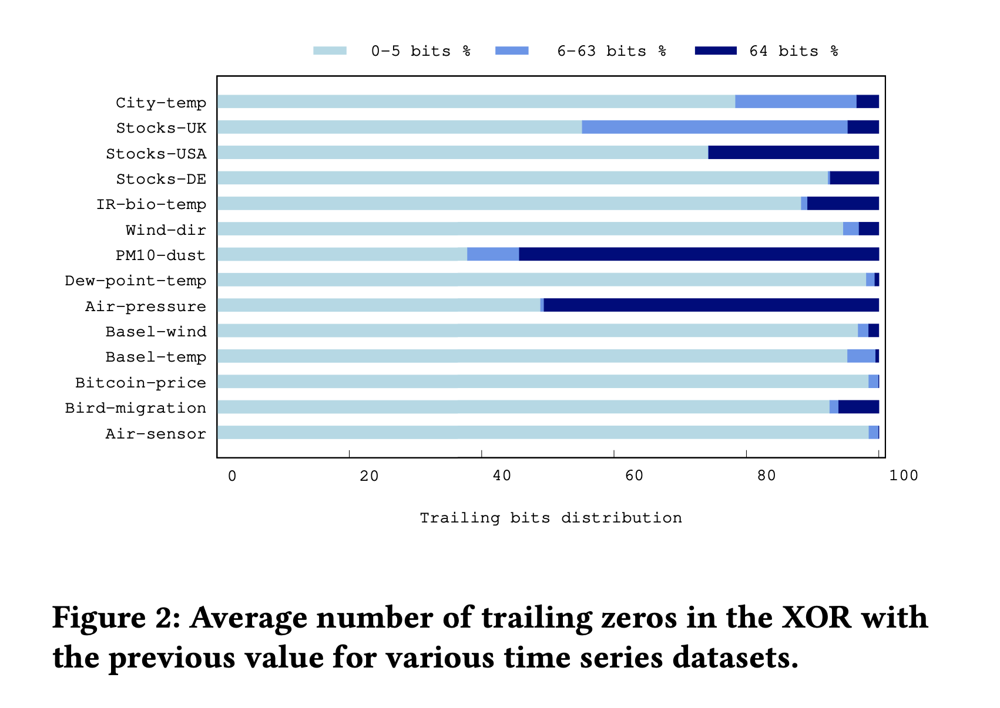
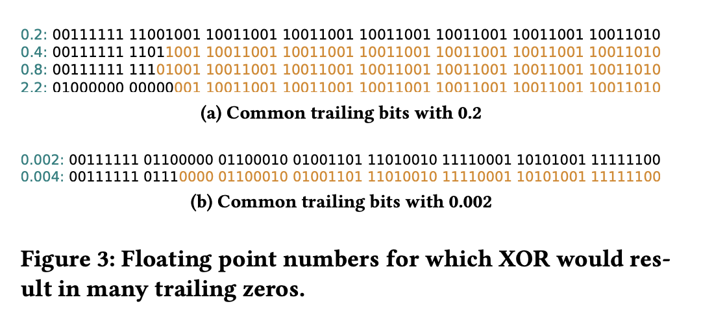
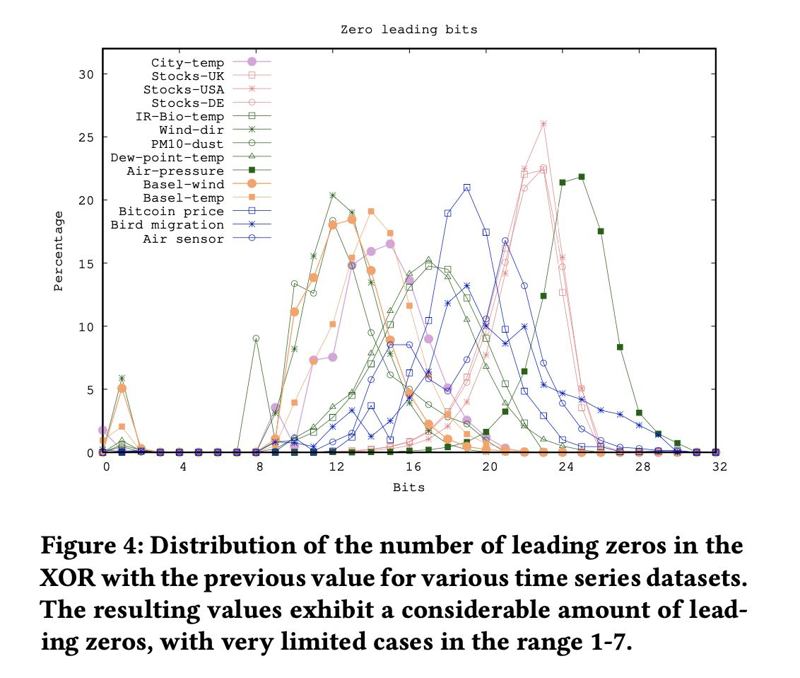
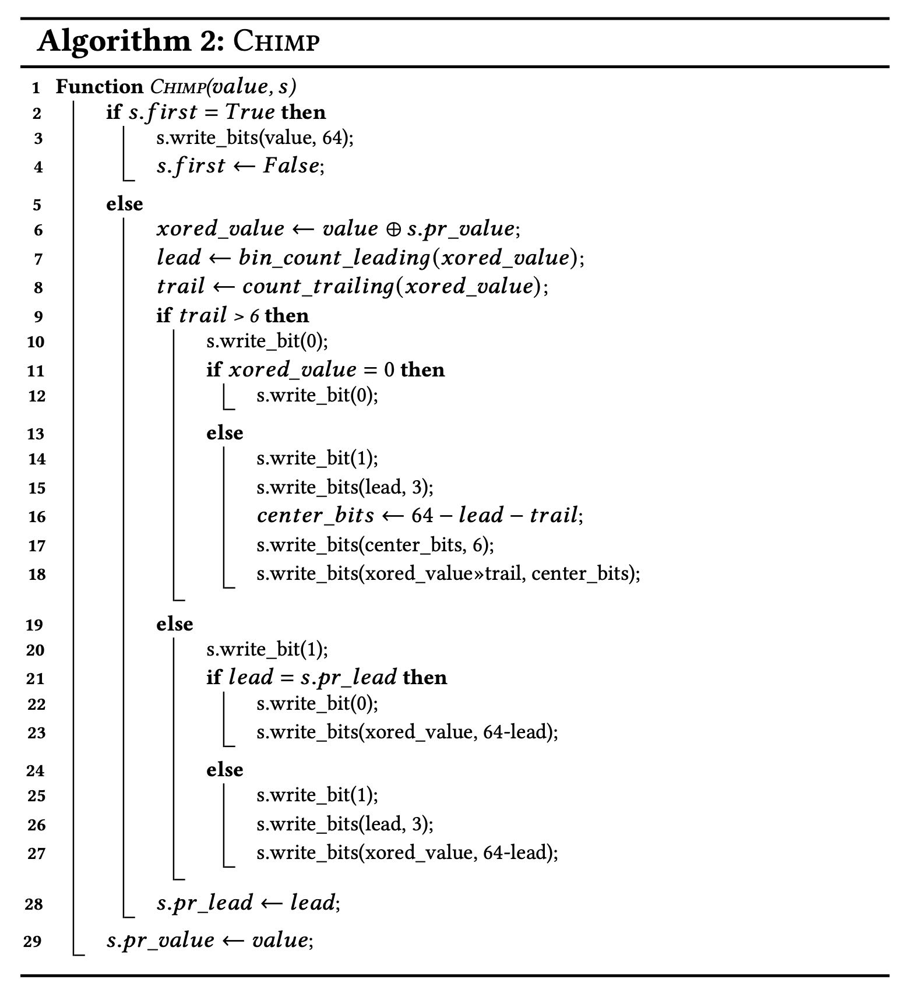
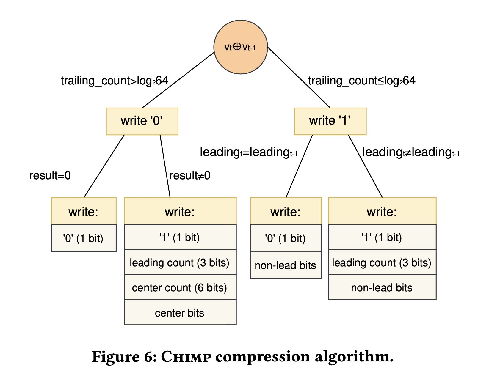
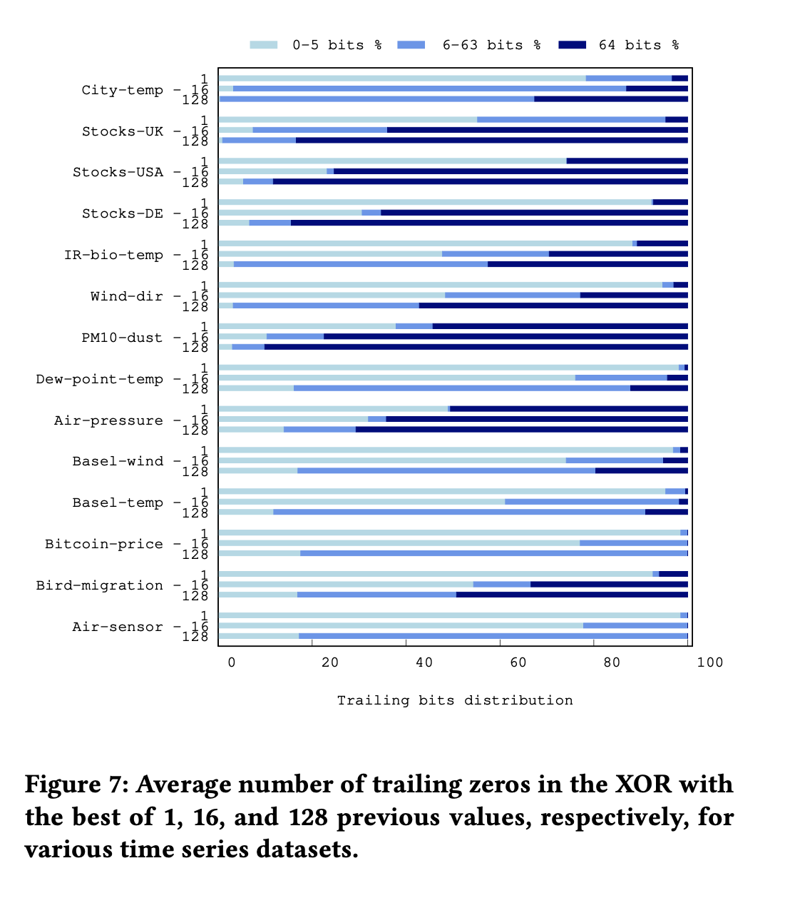
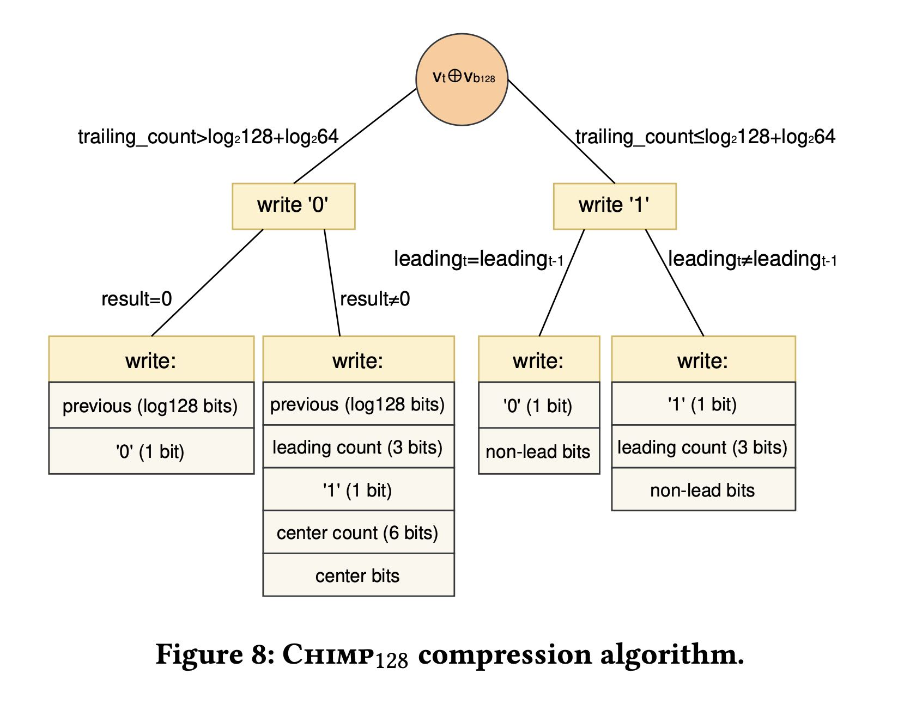

Chimp: Efficient Lossless Floating Point Compression for Time Series Databases
Table of Contents
https://www.vldb.org/pvldb/vol15/p3058-liakos.pdf
1. abstract
这个算法效果上：
- 和通用压缩算法相比，速度更快，但是压缩比差不都。
- 和gorilla相比，可以在节省50%的空间。
Our experimental evaluation demonstrates that our approach readily outperforms competing techniques, attaining compression ratios that are competitive with slower general purpose algorithms, and on average around 50% of the space required by state-of-the-art streaming approaches.
chimp是考虑了真实数据特征情况，然后在gorilla算法上改进得到的。
2. introduction
目前大部分浮点压缩算法都是使用和其他值来做xor寻找差异bits来做压缩的，得到的结果大部分0都集中在前缀(leading zeros而不是后缀(trailing zeros). 这个也是和gorilla的主要差别：chimp算法改进leading zeros的压缩，而trailing zeros压缩则看更大的值空间(chimp 128).
In this paper, we perform a rigorous study of compression al- gorithms suitable for floating point data to uncover the advantages and disadvantages of different approaches. We also study various real-world floating point time series and bring to light properties that provide high compression potential. Our investigation shows that when two consecutive floating point values are not identical, their respective XORed value is not likely to have a large number of trailing zeros. On the contrary, most resulting XORed values exhibit a considerable number of leading zeros. Based on our findings, we design and propose Chimp, a novel lossless streaming compres- sion algorithm that preserves the compression and decompression speed of earlier streaming approaches, while also providing signi- ficant space savings that are competitive with slower, yet extremely effective general purpose compression schemes.
3. gorilla
下面是gorilla的算法代码，主要思想就是：
- 如果meaning bits落在之前的范围内（14-16），那么可以复用之前的范围，就可以节省许多开销。
- 如果meaning bits落在之外，也就是说leading zeros/trailing zeros更多，那么就需要写新的范围。
- leading zeros因为用5bits去编码，所以最多表示32个。

4. real-world data
gorilla设计初衷上认为leading/trailing zeros可能是同样多的，但是chimp团队发现现实数据分布和预想的还不同。
4.1. trailing zeros
首先是 trailing zeros. 大部分现实数据集合只有 0-5 bits. 其他数据集合(PM10-dust, City-temp, Stocks-UK)因为精度和表示问题所以可以到很高。

We observe that with the exception of two time series, namely PM10-dust and Air-pressure, it is rather unlikely for two consecutive values to be identical. For most of the time series examined there are limited cases of resulting XORed values with 64 trailing zeros. Moreover, we observe that with very high probability the resulting values have less than six trailing zeros. Therefore, the design choice of Gorilla to reserve six bits to denote the number of trailing zeros,7 actually increases the space requirements of simply storing the actual bits. Finally, there are only three datasets for which there is a significant number of cases of trailing zeros in the range 6 − 63, i.e., City-temp, Stocks-UK, and PM10-dust. The first two use a single decimal digit and, as we can see in Figure 3a, there are many cases in which the XOR of different values with this precision causes a considerable number of trailing zeros in that range. PM10-dust uses 3 decimal digits, but certain fractional parts, such as the ones of Figure 3b, are much more frequent than others in this dataset. In most of the time series of Figure 2, we can clearly see that there are very few cases of resulting values with trailing zeros in the range 6 − 63.

4.2. leading zeros
leading zeros 集中在12-24 这个范围内，但是基本不会超过30.

Figure 4 depicts the distribution of the number of leading zeros that result when applying bitwise XOR between two consecutive values for all the time series of our dataset. As we can see, for most time series the result usually has at least 12 leading zeros, meaning that both the sign and the exponent of the XORed values are identical. This is not the case for City-temp, PM10-dust, and Wind-dir that often exhibit smaller runs of leading zeros, in the range 8 − 12. This means that the exponent is not identical, but quite similar, as a few of its less significant bits are different. We also notice in Figure 4 that Air-pressure is the only dataset whose successive values produce a large number of leading zeros when XORed. This is due to the large integer part the values of this dataset have, which causes similarity between consecutive values with regards to all sign, exponent, and the first bits of the significand. However, even for the Air-pressure dataset, XORed values rarely have more than 30 leading zeros.
5. chimp
chimp 算法是基于gorilla改进的，主要体现的：
- 考虑到trailing 和 leading zeros的不对称性。
- 考虑到leading zeros的范围，所以按照 "0,8,12,16,18,20,22,24" 8种情况进行编码。


6. chimp128
在chimp基础上，考虑不是和previous value做xor, 而是寻找看看最近16/128个values里面有没有trailing zeros完全相同的。这个实现结果发现如果扩展到128个的话，那么会有许多的trailing zeros. 但是于此同时我们需要记录和那个位置做xor. 这个需要增加7bits.(1<<7 = 128)

在实现上可以针对trailing bits做book keeping. 假设对最后面14bits做记录
- 每次插入的时候记录 `pos[v & (1 << 14)-1] = i`
- 匹配的时候可以判断 `j = pos[v & (1 << 14)-1]; if (j-i) < 128`.
Despite the impressive compression potential of using previous values, performing a considerable number of XOR operations to find the best match is costly. We are interested, however, in providing compression that is fast enough to cope with the ingestion rates that contemporary time series databases need to handle. To this end, Chimp128 uses a circular (ring) buffer of size 128 to hold the most recent values and an array of size 214 (2𝑙𝑜𝑔264+𝑙𝑜𝑔2128+1) to quickly come up with a suitable previous value. More specifically, we place every value 𝑣𝑖 we encounter in the 𝑖%128 position of the ring buffer. We also place 𝑖 in the 𝑣𝑖 & (214 − 1) position of the array. That is, we use the less significant bits of 𝑣𝑖 to come up with the position in the array. In this way, while compressing a new value 𝑣 𝑗 , we can retrieve in constant time the most recent value already encountered with at least 14 identical trailing bits, by looking in the 𝑣 𝑗 & (214 − 1) position of the array. If this value is within the 128 previous data points, i.e., if 𝑗 −𝑖 ≤ 128, we can use it to compress our new value. Even though this approach evicts some of the previous values examined, we will show in our experimental evaluation that our respective compression ratio loss is negligible. On the contrary, the compression time speed-up gains are significant. Moreover, the respective 33𝐾𝐵 of memory requirements are very modest.
修改得到的chimp128算法就是下面这样的
